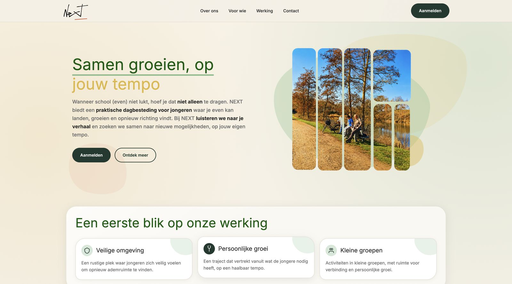
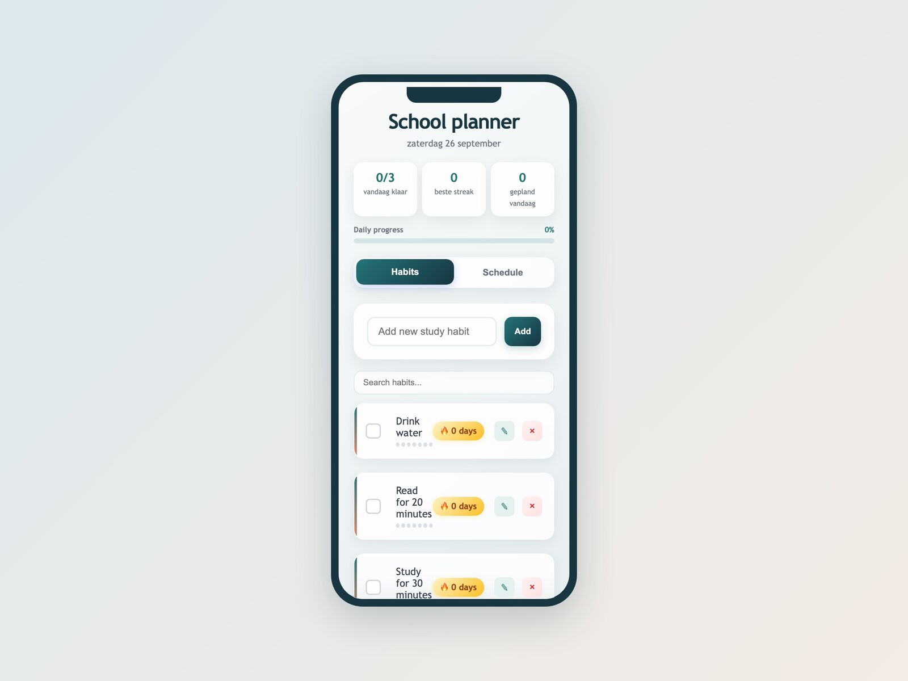
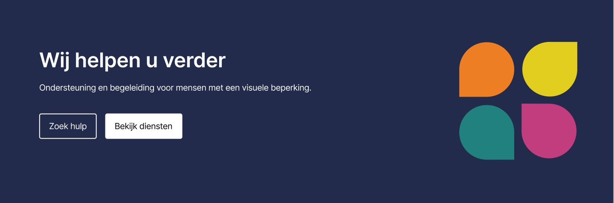

Al mijn projecten
Vijf projecten die mijn aanpak, research en visuele keuzes laten zien — van eerste idee tot werkende website.
NEXT
Website voor een dagbesteding voor jongeren die (even) vastlopen met school — warm, rustig en helder voor jongeren, ouders en professionals.

Habit Tracker
Een rustige habit tracker voor dagelijkse gewoontes, voortgang en planning.

S4Y
Tweetalige website voor een Belgische beveiligingsinstallateur, gebouwd rond een offerteformulier in stappen.

Licht & Liefde
Toegankelijke website voor een organisatie die mensen met een visuele beperking ondersteunt.

SITR
Website en visuele identiteit voor clothing brand SITR.
Meer projecten onderweg
Ik werk aan nieuwe projecten. Binnenkort vind je hier meer werk.